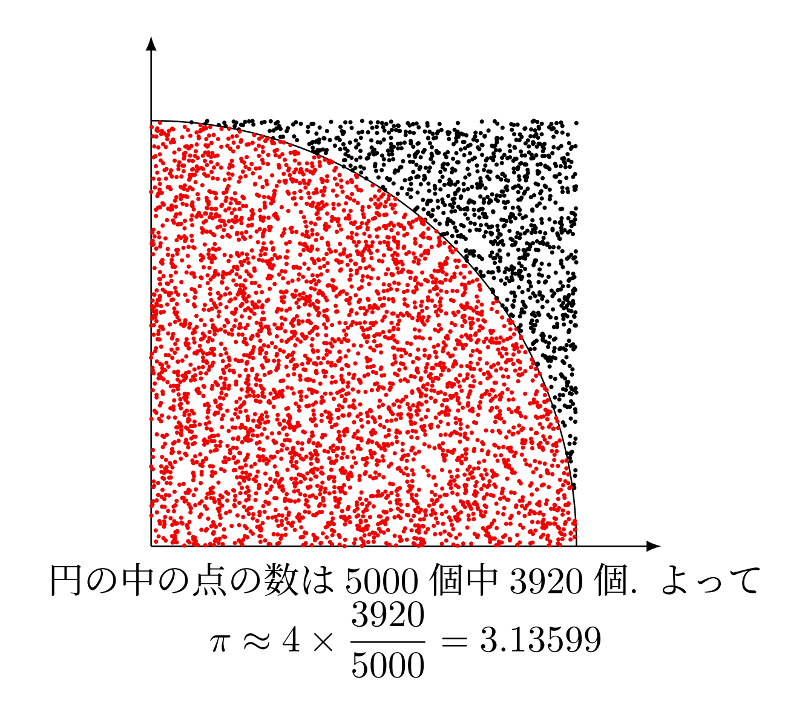

TeXでモンテカルロ法
LaTeXでモンテカルロ法を実行して, TikZで結果を可視化できるようにしました. 乱数を用いているのでコンパイル毎に結果が変わります.
下の写真はN=5000のときの結果の例です.
コード
以下がコードです. ご自由にお使いください.
\newcounter{n}\newcounter{est}\newcounter{N}\setcounter{est}{0}\setcounter{n}{0}\setcounter{N}{5000}\centering\begin{tikzpicture}[scale=4] \draw[-latex](0,0)--(1.2,0); \draw[-latex](0,0)--(0,1.2); \draw(1,0)arc[start angle=0, end angle=90, radius=1]; \loop \pgfmathsetmacro{\x}{rnd} \pgfmathsetmacro{\y}{rnd} \pgfmathparse{ifthenelse(\x^2+\y^2<1,1,0)} \ifnum \pgfmathresult = 1 \fill[red] (\x,\y)circle(0.005); \stepcounter{n} \else \fill (\x,\y)circle(0.005); \fi \stepcounter{est} \ifnum\value{est}<\value{N} \repeat\end{tikzpicture}\pgfmathparse{4*\value{n}/\value{N}}円の中の点の数は\theN 個中\then 個. よって$\displaystyle\pi\approx 4\times\frac{\then}{\theN}=\pgfmathresult$